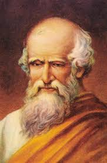
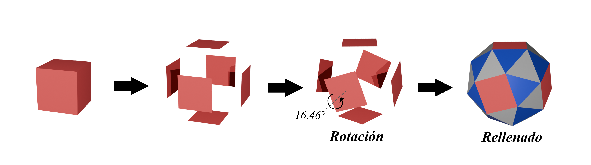
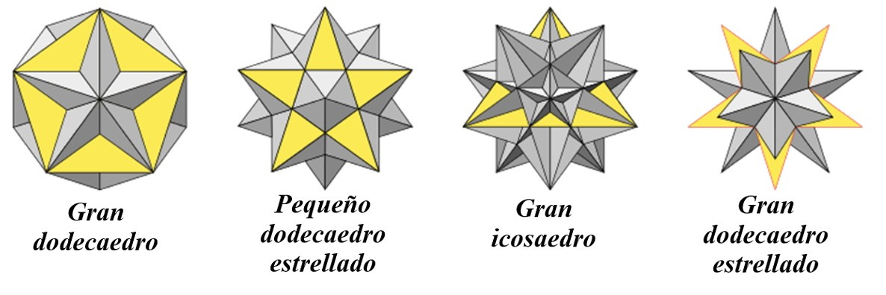
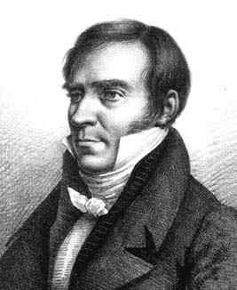
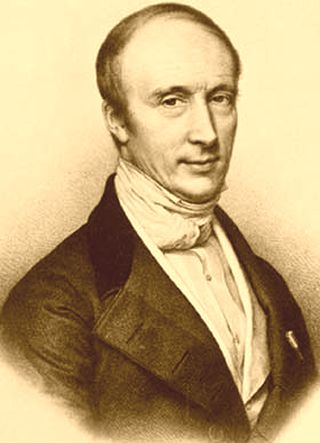
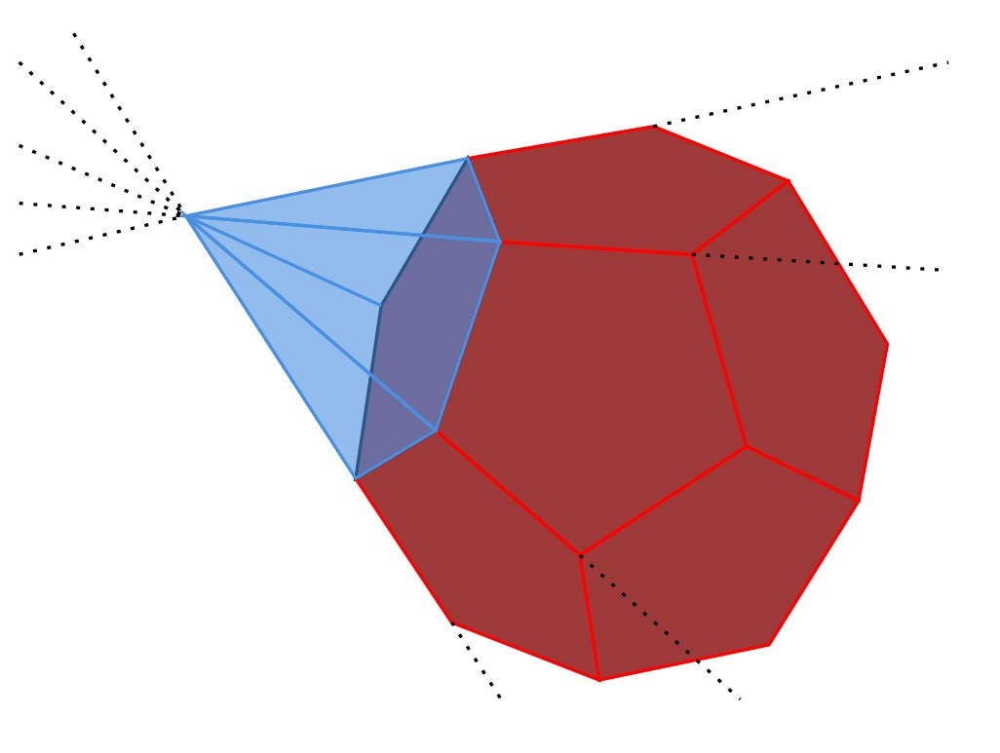
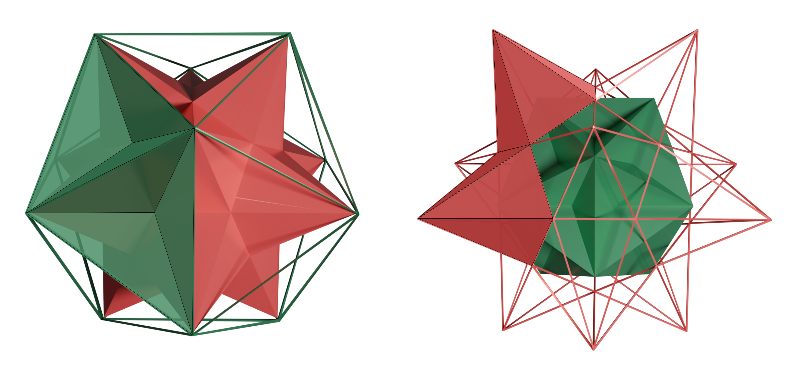
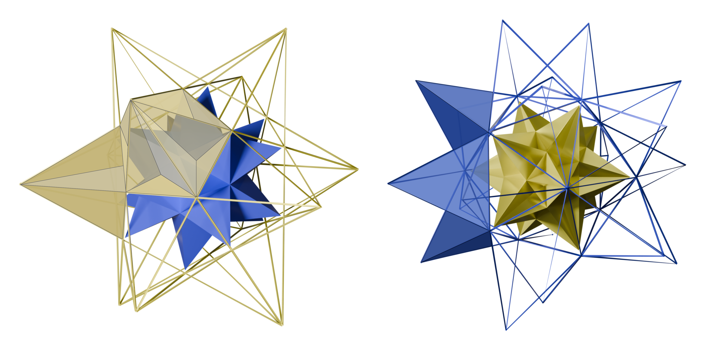

POLIEDROS DERIVADOS DE LOS PLATÓNICOS
En el estudio de los sólidos platónicos se vuelve relevante abarcar otras familias de poliedros igual de interesantes que surgen de la manipulación de los platónicos, pero desde un punto de vista más allá de sus concepciones de regularidad y convexidad. En este contexto, surgen los sólidos regulares no convexos, también conocidos como sólidos de Kepler-Poinsot, que mantienen la regularidad de sus caras y vértices, pero permiten la intersección de sus superficies. Y, por otro lado, se encuentran los sólidos semirregulares o arquimedianos, que conservan la convexidad, pero combinan más de un tipo de polígono regular en sus caras. El análisis de estas extensiones permite comprender nuevas formas de equilibrio geométrico dentro de la estructura tridimensional.
Sólidos Arquimedeanos
Los sólidos arquimedianos constituyen una categoría intermedia entre los sólidos platónicos y los sólidos irregulares, extendiendo el concepto de regularidad al permitir la combinación de distintas figuras poligonales bajo una misma estructura simétrica. De esta forma, “los sólidos arquimedianos, o sólidos de Arquímedes, o poliedros semirregulares, son poliedros convexos cuyas caras son polígonos regulares de más de un tipo, mientras que en los sólidos platónicos, todas las caras son polígonos regulares de un solo tipo” (Sousa, 2014, p. 13). En este sentido, Anderson (2008) menciona que un poliedro es arquimediano “si todas sus caras son polígonos regulares y sus esquinas son iguales” (p. 4).

Los 13 sólidos arquimedeanos
Historia
Desde el punto de vista histórico, los sólidos arquimedianos “reciben su nombre del matemático, físico, ingeniero, inventor y astrónomo griego Arquímedes de Siracusa (287-212 a.C.), ya que fue él quien los estudió en el siglo III a.C.” (Sousa, 2014, p. 13), descubriendo así 13 poliedros convexos semirregulares partiendo de los 5 sólidos platónicos (Anderson, 2008). A pesar de que los escritos originales de Arquímedes sobre estos poliedros se perdieron, su estudio fue recuperado durante el Renacimiento, donde Pierro della Francesca junto con otros matemáticos y artistas de la época fueron redescubriendo estas figuras semirregulares, al punto de que en 1619, Johannes Kepler, en su obra Harmonices Mundi, completara la lista (Sousa, 2014).

Retrato de Arquimedes
Construcción geométrica
Tal como se mencionó anteriormente, los sólidos arquimedianos derivan directamente de los sólidos platónicos mediante transformaciones geométricas. Una de estas transformaciones es el truncamiento, el cual consiste en cortar los vértices o aristas de las figuras originales, generando nuevas caras y combinaciones de polígonos regulares en cada vértice. De este modo, tal como explica Anderson (2008), “los primeros cinco sólidos arquimedianos se crean truncando los sólidos platónicos originales” (p. 5), que serían el tetraedro truncado, el cubo truncado, el octaedro truncado, el dodecaedro truncado y el icosaedro truncado, en los cuales los vértices se reemplazan por polígonos regulares que se integran a la estructura inicial (Anderson, 2008).
Este método también permite obtener poliedros mixtos, como el cuboctaedro, generado al conectar los puntos medios de las aristas del cubo (Anderson, 2008). Incluso, algunas figuras pueden derivarse de más de un sólido platónico, como el icosidodecaedro, que “se puede crear truncando el dodecaedro truncado” (Anderson, 2008, p. 9).
.png "Generación de los sólidos arquimedeanos")
Generación de los sólidos arquimedeanos por truncamiento
Otra forma de obtener sólidos arquimedianos es a través de la expansión, que consiste en desplazar radialmente las caras o aristas de un sólido, manteniendo su orientación y tamaño, y rellenando los espacios vacíos con nuevas figuras (Ball y Coxeter, 1987, citados en Anderson, 2008).
.png "Ejemplo de expansión del hexaedro para obtener al rombicuboctaedro")
Ejemplo de expansión del hexaedro para obtener al rombicuboctaedro
La última transformación empleada para derivar sólidos arquimedianos es la esnubificación o rotación, un proceso que implica desplazar y girar las caras del poliedro original, generando cuerpos con una simetría menos evidente, por ejemplo, el cubo doblemente truncado o cubo romo que se obtiene cuando separamos las caras del cubo, las giramos y rellenamos los espacios formados entre las caras con 32 triángulos equiláteros, y lo mismo pasa con el dodecaedro doblemente truncado a partir del dodecaedro (Sousa, 2014).

Ejemplo de rotación del hexaedro para obtener al cubo doblemente truncado
En cuanto a sus propiedades métricas, se puede mencionar a la relación de Euler (\(V-E+F=2\), con \(V, E\) y \(F\) la cantidad de vértices, aristas y caras, respectivamente) debido a que, como se había explicado para los sólidos platónicos (ver Teorema de Euler para los sólidos platónicos), esta condición se aplica para todos los poliedros convexos independientemente si son regulares o no, tal como se observa en la siguiente tabla:
| Sólido Arquimediano | Vértices (V) | Aristas (E) | Caras (F) | \(V − E + F\) |
|---|---|---|---|---|
| Truncado del tetraedro | 12 | 18 | 8 | 2 |
| Cuboctaedro | 12 | 24 | 14 | 2 |
| Cubo truncado | 24 | 36 | 14 | 2 |
| Octaedro truncado | 24 | 36 | 14 | 2 |
| Rombicuboctaédrico | 24 | 48 | 26 | 2 |
| Gran rombicuboctaédrico | 60 | 120 | 62 | 2 |
| Cubo snub/romo | 24 | 60 | 38 | 2 |
| Dodecaedro truncado | 60 | 90 | 32 | 2 |
| Icosaedro truncado | 60 | 90 | 32 | 2 |
| Icosidodecaedro | 30 | 60 | 32 | 2 |
| Rombicosidodecaédrico | 60 | 120 | 62 | 2 |
| Dodecaedro snub/romo | 60 | 150 | 92 | 2 |
| Cuboctaedro truncado | 48 | 72 | 26 | 2 |
Teorema de Euler para los sólidos arquimedeanos
Asimismo, otra propiedad geométrica que tienen los sólidos arquimedianos es con respecto a sus ángulos y su número de vértices, la cual Anderson (2008, citado en Ball y Coxeter, 1987) establece que:
Relación importante
\((2\pi-\beta)V=4\pi\)
\(\beta\): la suma de ángulos de las caras que concurren en un mismo vértice, V: el número de vértices
Sólidos de Kepler-Poinsot
Los sólidos de Kepler-Poinsot representan una extensión del concepto clásico de regularidad geométrica que, a diferencia de los sólidos platónicos, permiten la intersección de sus superficies, es decir, no son convexos pero conservan la regularidad en sus caras y vértices. En este sentido, Arguedas (2014) señala que “un sólido de Kepler (también llamado sólido de Kepler-Poinsot) es un poliedro regular no convexo, cuyas caras son todas polígonos regulares y que tiene en todos sus vértices el mismo número de caras que se encuentran” (p. 6).

Sólidos de Kepler-Poinsot
Tomada de Liu, A. (2020). The Stars Above Us [Tesis]. Harvard University.
Historia
Históricamente, en 1619, el matemático y astrofísico alemán Johannes Kepler (1571-1630) en su obra Harmonices Mundi, por medio de ensamblajes de pentagramas e intrigado con la manipulación de los sólidos platónicos, reconoce dos sólidos regulares no convexos redescubriendo así el pequeño dodecaedro estrellado, ya que había sido utilizado años atrás por Paolo Uccello con su diseño de un mosaico en el piso de la basílica de San Marcos en Venecia, y el gran dodecaedro estrellado; definiéndolos como poliedros regulares, a pesar de su naturaleza no convexa (Gómez Moreno, 2019; Mosquera López, 2019).
Retrato de Johannes Kepler (1572-1630)
Por otra parte, en 1809, el matemático y físico francés Louis Poinsot (1777-1859) amplía la familia de los sólidos estelados, incluyendo a los otros dos poliedros no convexos regulares, el gran icosaedro y el gran dodecaedro (Fundación Polar, 2006, p. 23).

Retrato de Louis Poinsot (1777-1859)
Para 1811, el matemático francés Augustin Cauchy demuestra que hay únicamente nueve poliedros regulares, donde 5 son convexos (los Sólidos Platónicos) y los otros 4 son no convexos, que son los Sólidos de Kepler-Poinsot (pequeño dodecaedro estrellado, gran dodecaedro estrellado, gran icosaedro y el gran dodecaedro) basándose del proceso denominado estelación del dodecaedro y del icosaedro (Mosquera López, 2019).

Retrato de Augustin Cauchy
Construcción geométrica
La estelación es el proceso geométrico mediante el cual se extienden las caras o aristas de un poliedro más allá de sus límites hasta que vuelven a intersectarse, formando nuevas regiones que configuran un sólido más complejo (Mosquera, 2005). En términos formales, si se toma un poliedro convexo (como los platónicos), se prolongan sus planos hasta que delimitan nuevas poligonales cerradas; el sólido estrellado será el conjunto de esas regiones.

Estelación de un dodecaedro
Como dicho proceso es análogo a la prolongación de las aristas de la caras pentagonales, existe una estrecha relación con el número áureo, específicamente en la razón entre sus lados y diagonales y prolongaciones, tal como se evidencia en la siguiente figura:
.png "Proporción Áurea en el proceso de estelación")
Proporción Áurea en el proceso de estelación
Un aspecto muy interesante es su dualidad ya que, al igual que los sólidos platónicos, los sólidos de Kepler-Poinsot, sus duales también son otros sólidos de Kepler-Poinsot. Esta relación nos permite generalizar de modo que el dual de un sólido regular es siempre otro sólido regular independientemente si es convexo o no.

Dualidad entre el Pequeño dodecaedro estrellado (rojo) y el Gran dodecaedro (verde)

Dualidad entre el Gran dodecaedro estrellado (azul) y el Gran icosaedro (amarillo)
De este modo, se observa que el dual del Pequeño dodecaedro estrellado es el Gran dodecaedro, y el dual del Gran dodecaedro estrellado es el Gran icosaedro.
Referencias
- Anderson, A. (2008). Archimedean solids. MAT Exam Expository Papers, 4 .
- Arguedas, V. (2014). Luca pacioli forjador de grandes obras. Revista digital Matemática, Educación e Internet, 14 (2).
- Gómez, B. (2019). 400 años del Harmonices Mvndi de johannes kepler. Revista de la Academia Colombiana de Ciencias Exactas, Físicas y Naturales, 43 (166), 6–8. doi: 10.18257/raccefyn.872
- Liu, A. (2020). The stars above us [tesis].
- Mosquera, M., y Bernal, R. (2005). De los sólidos platónicos a las pelotas de fútbol. En Ii encuentro de matemáticas del caribe colombiano. Barranquilla, Colombia.
- Mosquera, S. (2019). La construcción del gran icosaedro en geogebra. Revista Sigma, 15 (2), 34–41.
- Sousa, H. (2014). Os 13 sólidos arquimedianos. Universidade dos Açores, CMATI / Departamento de Matemática.